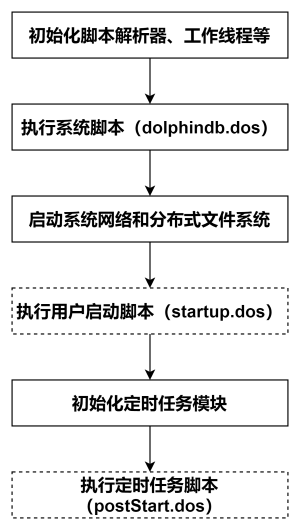

DolphinDB INSIGHT 行情插件最佳实践指南
INSIGHT 是华泰证券依托大数据存储、实时分析等领域的技术积累，整合接入国内多家交易所高频行情数据，为投资者提供集行情接入、推送、回测、计算及分析等功能于一体的行情数据服务解决方案。基于 INSIGHT 官方提供的行情数据服务 C++ SDK（TCP 版本），DolphinDB 开发了能够获取市场行情数据的 INSIGHT 插件，帮助用户方便地通过 DolphinDB 脚本语言将实时行情数据接入 DolphinDB 进程中，以便进行后续的计算或存储。
本文主要介绍如何通过 INSIGHT 插件将实时行情数据写入分布式数据库，以及如何实现节点启动时自动订阅 INSIGHT 实时行情。本文全部代码需要运行在 2.00.11 或者更高版本的 DolphinDB server 以及插件上，目前仅支持 Linux 系统。
1. DolphinDB INSIGHT 行情插件介绍
INSIGHT 插件的接口介绍见 DolphinDB INSIGHT Plugin 使用说明，注意，INSIGHT 插件基于 INSIGHT 官方提供的行情数据服务 C++ SDK（即 TCP 版本 INSIGHT）实现。若您的 INSIGHT 订阅账号对应 C++ UDP SDK，本文提到的 2.00.11 版本插件将无法支持，可以联系 DolphinDB 技术支持以进一步了解。
INSIGHT 插件最核心的功能是实现了 INSIGHT C++ SDK 中的行情回调函数，每次接收到行情时会写入对应的 DolphinDB 内存表，DolphinDB INSIGHT 插件目前已经支持的数据源包括：
| Level-2 快照 | 逐笔成交 | 逐笔委托 | 逐笔成交和委托 | |
|---|---|---|---|---|
| 股票 | √ | √ | √ | √ |
| 指数 | √ | |||
| 期货 | √ | |||
| 基金 | √ | √ | √ | √ |
注：逐笔成交和委托类型是为了对接 DolphinDB orderbookengine 使用。（可联系 DolphinDB 技术支持以进一步了解）
2. 基本使用介绍
2.1. 安装插件
节点启动后，连接节点并在 GUI（或 VS Code、Web UI）等DolphinDB 客户端中执行 installPlugin 函数，则可以下载到与当前 server 版本适配的 INSIGHT 插件文件，插件文件包括插件描述文件及插件的二进制文件。
login("admin", "123456")
installPlugin("insight")installPlugin 函数若正常返回，则代表下载成功，其返回值为插件描述文件（PluginInsight.txt）的安装路径，如：
/path_to_dolphindb_server/server/plugins/insight/PluginInsight.txtinstallPlugin 函数实际上是完成从远程文件服务器拉取插件文件到 DolphinDB server 所在的服务器，因此需要一定的耗时，请耐心等待大约一分钟。
2.2. 加载插件
在脚本中调用插件相关的接口前，需要先加载插件。在 GUI（或 VS Code、Web UI）等客户端中执行 loadPlugin 函数加载插件。以下示例中使用了相对路径，也可以试用 2.1 中返回的绝对路径 /path_to_dolphindb_server/server/plugins/insight/PluginInsight.txt。
loadPlugin("./plugins/insight/PluginInsight.txt")loadPlugin 函数正常返回则插件加载成功，以 VS Code 为例，首次加载成功后返回的部分信息如下，返回值是 INSIGHT 插件提供的所有函数，至此插件安装与加载已全部完成：
此外，需要注意，如果重复执行 loadPlugin 加载插件，会抛出模块已经被使用的错误提示，因为节点启动后，只允许加载一次 INSIGHT 插件，即可在任意会话中调用该插件提供的函数。错误提示如下：
The module [insight] is already in use.可以通过 try-cach 语句捕获这个错误，避免因为插件已加载而中断后续脚本代码的执行：
try{ loadPlugin("./plugins/insight/PluginInsight.txt") }catch(ex){print ex}此外，若节点重启则需要重新加载插件。
3. 通过 INSIGHT 行情插件将实时行情数据写入分布式数据库
本章以订阅沪深两市的全市场股票的逐笔数据、实时写入 DolphinDB 分布式数据库为例，对 INSIGHT 插件的使用进行说明，大致的流程如下：
- 通过 INSIGHT 插件订阅逐笔数据写入 DolphinDB transactionTable 和 orderTable 两个持久化流数据表。持久化流数据表是具备发布订阅功能的内存表。
- 订阅持久化流数据表写入 DolphinDB 分布式数据库。分布式数据库是将数据存储到磁盘上。
注意：请勿使用 INSIGHT 插件将行情数据直接写入分布式数据库。因为分布式数据库并不适用于此类高频的流式写入。建议在使用时，借助流数据表及其发布订阅功能以实现微批处理。这样既可以提高写入的吞吐，也有助于降低时延。
下面分步骤介绍关键的 DolphinDB 代码实现，完整脚本见附录。
3.1. 清理环境（可选）
为保证本文的示例脚本能够反复执行，特提供了以下流环境清理脚本。
由于相同的流数据表名和订阅无法进行重复定义，因此先取消相关订阅并清除需要用到的流数据表。
try {
tcpClient = insight::getHandle()
insight::unsubscribe(tcpClient)
insight::close(tcpClient)
} catch(ex) { print(ex) }
try { unsubscribeTable(tableName="transactionTable", actionName="transactionTableInsert") } catch(ex) { print(ex) }
try { unsubscribeTable(tableName="orderTable", actionName="orderTableInsert") } catch(ex) { print(ex) }
try { dropStreamTable(tableName="transactionTable") } catch(ex) { print(ex) }
try { dropStreamTable(tableName="orderTable") } catch(ex) { print(ex) }
undef all3.2. 创建库表
执行创建分布式库表的语句前，需要登陆有创建权限的账号。执行如下代码登录默认的管理员账号：
login("admin", "123456")3.2.1. 获取表结构
调用 insight::getSchema 方法可以获取行情数据各个表的表结构。以下代码获取股票逐笔成交和逐笔委托两张表的表结构：
// 股票逐笔成交
transactionSchema = insight::getSchema(`StockTransaction);
//股票逐笔委托
orderSchema = insight::getSchema(`StockOrder); 3.2.2. 创建持久化流数据表
得到行情数据的表结构后，使用该表结构创建持久化流数据表。
// 建立用于 insight 行情接入的持久化流表
cacheSize = 1000000
transactionColName = transactionSchema[`name]
transactionColType = transactionSchema[`type]
orderColName = orderSchema[`name]
orderColType = orderSchema[`type]
enableTableShareAndPersistence(table=streamTable(cacheSize:0, transactionColName, transactionColType), tableName=`transactionTable, cacheSize=cacheSize)
enableTableShareAndPersistence(table=streamTable(cacheSize:0, orderColName, orderColType), tableName=`orderTable, cacheSize=cacheSize)- 为保证
enableTableShareAndPersistence函数能够正常执行，需要节点启动之前在配置文件中（单节点：dolphindb.cfg，集群：cluster.cfg）指定配置参数 persistenceDir ，配置参考功能配置。 - 代码第二行的
cacheSize变量控制了在建表时预分配内存的大小、以及流数据表可占用的最大内存，其单位是行，设置较大的cacheSize可以降低出现峰值时延的频率。具体大小可以根据实际的可使用的内存大小决定。具体优化原理可参考 DolphinDB 流计算时延统计与性能优化。
3.2.3. 创建分布式数据库
为将行情数据存入分布式数据库，需要根据之前得到的行情数据表结构来创建分布式库表，分区规则参考自存储金融数据的分区方案最佳实践。
dbName = "dfs://Stock_TB"
transactionTbName = "transactionTable"
orderTbName = "orderTable"
dbDate = database(, partitionType=VALUE, partitionScheme=2023.01.01..2024.01.01)
dbID = database(, partitionType=HASH, partitionScheme=[SYMBOL, 25])
db = database(directory=dbName, partitionType=COMPO, partitionScheme=[dbDate, dbID],engine='TSDB',atomic='CHUNK')
tbSchema = table(1:0, transactionColName, transactionColType)
db.createPartitionedTable(table=tbSchema,tableName=transactionTbName,partitionColumns=`MDDate`HTSCSecurityID,sortColumns=`HTSCSecurityID`MDTime)
tbSchema = table(1:0, orderColName, orderColType)
db.createPartitionedTable(table=tbSchema,tableName=orderTbName,partitionColumns=`MDDate`HTSCSecurityID,sortColumns=`HTSCSecurityID`MDTime) 3.3. 订阅流数据表把增量数据实时写入分布式数据库
订阅 3.2 节中的两个持久化流数据表，将增量数据实时写入分布式数据库。
Transaction = loadTable(database=dbName, tableName=transactionTbName)
Order = loadTable(database=dbName, tableName=orderTbName)
subscribeTable(tableName="transactionTable", actionName="transactionTableInsert", offset=-1, handler=tableInsert{Transaction}, msgAsTable=true, batchSize=20000, throttle=1, reconnect=true)
subscribeTable(tableName="orderTable", actionName="orderTableInsert", offset=-1, handler=tableInsert{Order}, msgAsTable=true, batchSize=20000, throttle=1, reconnect=true)- 通过调整 subscribeTable 函数中的 batchSize 和 throttle 参数可以控制写入分布式数据库的频率。
- batchSize=20000 表示当未处理消息的数量达到 20000 时，handler 才会处理消息。
- throttle=1 表示继上次 handler 处理消息之后，若未处理消息的数量还没有达到 20000，但是时间间隔 1s 后也会处理消息。
- 因此，达到 batchSize 设置的条件或者达到 throttle 设置的条件，才会向分布式数据库写入一次。
3.4. 订阅 INSIGHT 行情将增量数据实时写入流数据表
3.4.1. 建立 INSIGHT 连接
用户配置 INSIGHT 账户信息，使用 insight::connect 函数进行连接，handles 用于设置接收行情数据的流数据表，下例用流数据表 transactionTable 接收逐笔成交（字典的 key 为 Transaction 表示了逐笔成交）。
// 配置账户信息
HOST = "111.111.111.111";
PORT = 111;
USER = "111";
PASSWORD = "111";
handles = dict(['Transaction', 'Order'], [transactionTable, orderTable]);
tcpClient= insight::connect(handles,HOST, PORT, USER, PASSWORD,,,true);3.4.2. 订阅行情数据
使用 insight::subscribe 函数进行 INSIGHT 行情订阅，行情数据将进入流数据表。
// 深交所股票数据
insight::subscribe(tcpClient, `MD_TRANSACTION`MD_ORDER, `XSHE, `StockType)
// 上交所股票数据
insight::subscribe(tcpClient, `MD_TRANSACTION`MD_ORDER, `XSHG, `StockType) 3.5. 查询 INSIGHT 行情接收情况
运行过程中，可以查看 INSIGHT 行情的接收情况。首先调用 insight::getHandle 函数获取连接句柄，再使用 insight::getStatus 查询 INSIGHT 行情的接收情况。
tcpClient = insight::getHandle()
insight::getStatus(tcpClient)返回结果如下，本例在 16:26 (见 startTime 字段) 提交了 INSIGHT 订阅，订阅了逐笔成交和逐笔委托（见 startTime 不为空的 topicType 字段），订阅的是沪深两市的股票数据（见 market 字段）。但是由于已经是盘后了，所以实际上并没有逐笔数据发送过来，因此 firstMsgTime 为空，firstMsgTime 表示收到第一条数据的系统时刻。
当在盘中启动时，可以看到 firstMsgTime 与 lastMsgTime 均不为空，lastMsgTime 表示收到最后一条数据的系统时刻。
4. 节点启动时自动订阅 INSIGHT 实时行情数据入库
DolphinDB 系统的启动流程如下图所示：
系统初始化脚本（dolphindb.dos）
系统初始化脚本是必需的，默认加载版本发布目录中的 dolphindb.dos。不建议做修改，因为版本升级的时候需要用新版本发布包中的系统初始化脚本覆盖。
用户启动脚本（startup.dos）
用户启动脚本是通过配置参数 startup 后才会执行，单节点模式在 dolphindb.cfg 中配置，集群模式在 cluster.cfg 中配置，可配置绝对路径或相对路径。若配置了相对路径或者没有指定目录，系统会依次搜索本地节点的 home 目录、工作目录和可执行文件所在目录。
配置举例如下:
startup=/DolphinDB/server/startup.dos`将上述业务代码添加到 /DolphinDB/server 目录的 startup.dos 文件中，并在对应的配置文件中配置参数 startup，即可完成节点启动时的自动订阅部署。
定时任务脚本（postStart.dos）
DolphinDB 中通过
scheduleJob函数定义的定时任务会进行持久化。所以在重新启动节点时，系统先执行用户启动脚本，然后在初始化定时任务模块时完成持久化定时任务的加载。在完成上述步骤后，系统会执行定时任务脚本，此时用户可以在定时任务脚本中调用scheduleJob函数定义新的定时任务。本教程中未使用该功能，所以不需要开启该配置项。1.30.15 和 2.00.3 版本开始支持配置 postStart.dos 实现节点启动自动执行定时任务脚本。
注意：
- INSIGHT 的账户信息需要根据实际环境进行修改。
5. 附录
- 详细启动脚本配置可以参考官网文档教程：启动脚本教程。
- 关于节点启动时自动订阅处理业务的部署可以参考官网文档教程：节点启动时的流计算自动订阅教程。
- startup.dos 启动脚本（账户信息需要根据用户实际情况进行修改）。
// 加载插件
login("admin", "123456")
try{ loadPlugin("./plugins/insight/PluginInsight.txt") }catch(ex){print ex}
// 清理环境
def cleanEnvironment(){
try {
tcpClient = insight::getHandle()
insight::unsubscribe(tcpClient)
insight::close(tcpClient)
} catch(ex) { print(ex) }
try { unsubscribeTable(tableName="transactionTable", actionName="transactionTableInsert") } catch(ex) { print(ex) }
try { unsubscribeTable(tableName="orderTable", actionName="orderTableInsert") } catch(ex) { print(ex) }
try { dropStreamTable(tableName="transactionTable") } catch(ex) { print(ex) }
try { dropStreamTable(tableName="orderTable") } catch(ex) { print(ex) }
undef all
}
// 创建用于 INSIGHT 行情接入的持久化流数据表
def createStreamTable() {
cacheSize = 1000000
transactionSchema = insight::getSchema(`StockTransaction);
orderSchema = insight::getSchema(`StockOrder);
transactionColName = transactionSchema[`name]
transactionColType = transactionSchema[`type]
orderColName = orderSchema[`name]
orderColType = orderSchema[`type]
enableTableShareAndPersistence(table=streamTable(cacheSize:0, transactionColName, transactionColType), tableName=`transactionTable, cacheSize=cacheSize)
enableTableShareAndPersistence(table=streamTable(cacheSize:0, orderColName, orderColType), tableName=`orderTable, cacheSize=cacheSize)
}
// 创建存储行情数据的分布式数据库表
def createDFSTable(dbName, transactionTbName, orderTbName) {
transactionSchema = insight::getSchema(`StockTransaction);
orderSchema = insight::getSchema(`StockOrder);
transactionColName = transactionSchema[`name]
transactionColType = transactionSchema[`type]
orderColName = orderSchema[`name]
orderColType = orderSchema[`type]
if(!existsDatabase(dbName)) {
dbDate = database(, partitionType=VALUE, partitionScheme=2023.01.01..2024.01.01)
dbID = database(, partitionType=HASH, partitionScheme=[SYMBOL, 25])
db = database(directory=dbName, partitionType=COMPO, partitionScheme=[dbDate, dbID],engine='TSDB',atomic='CHUNK')
}
if(!existsTable(dbName, transactionTbName)) {
db = database(dbName)
tbSchema = table(1:0, transactionColName, transactionColType)
db.createPartitionedTable(table=tbSchema,tableName=transactionTbName,partitionColumns=`MDDate`HTSCSecurityID,sortColumns=`HTSCSecurityID`MDTime)
}
if(!existsTable(dbName, orderTbName)) {
db = database(dbName)
tbSchema = table(1:0, orderColName, orderColType)
db.createPartitionedTable(table=tbSchema,tableName=orderTbName,partitionColumns=`MDDate`HTSCSecurityID,sortColumns=`HTSCSecurityID`MDTime)
}
}
// 订阅流数据表把增量数据实时写入分布式数据库
def saveToDFSTable(dbName, transactionTbName, orderTbName) {
Transaction = loadTable(database=dbName, tableName=transactionTbName)
Order = loadTable(database=dbName, tableName=orderTbName)
subscribeTable(tableName="transactionTable", actionName="transactionTableInsert", offset=-1, handler=tableInsert{Transaction}, msgAsTable=true, batchSize=20000, throttle=1, reconnect=true)
subscribeTable(tableName="orderTable", actionName="orderTableInsert", offset=-1, handler=tableInsert{Transaction}, msgAsTable=true, batchSize=20000, throttle=1, reconnect=true)
}
// 订阅 INSIGHT 行情将增量数据实时写入流数据表
def connectToInsight(ip, port, user, password){
// 建立 INSIGHT 连接
handles = dict(['Transaction', 'Order'], [objByName(`transactionTable), objByName(`orderTable)])
tcpClient= insight::connect(handles, ip, port, user, password,,,true)
// 订阅深交所股票逐笔成交、逐笔委托
insight::subscribe(tcpClient, `MD_TRANSACTION`MD_ORDER, `XSHE, `StockType)
// 订阅上交所股票逐笔成交、逐笔委托
insight::subscribe(tcpClient, `MD_TRANSACTION`MD_ORDER, `XSHG, `StockType)
}
// 配置账户信息。注意！账户信息必须根据用户实际情况进行修改
host = "111.111.111.111"
port = 111
user = "111"
password = "111"
// 配置数据库表名
dbName = "dfs://Stock_TB"
transactionTbName = "transactionTable"
orderTbName = "orderTable"
cleanEnvironment()
createStreamTable()
createDFSTable(dbName, transactionTbName, orderTbName)
saveToDFSTable(dbName, transactionTbName, orderTbName)
connectToInsight(ip, port, user, password)
writeLog("Subsribe to insight market data successfully!")